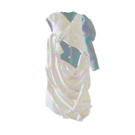
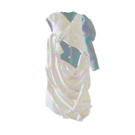
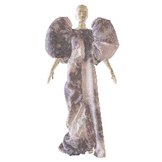
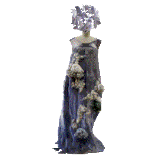
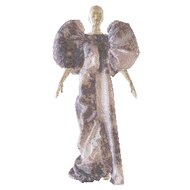
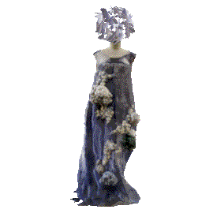
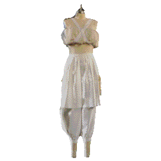
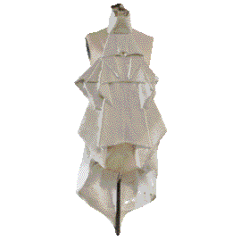
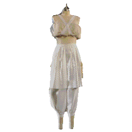
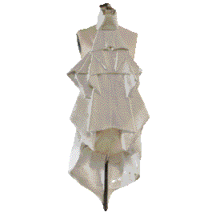

CCA 2021 Fashion Experience
Un-Settled
Featuring work by
Emma Bjorklund
 Kexin Sun

Mooni Wang
Kexin Sun

Mooni Wang
 Robert Whitehurst

Siti Li

Sojung Kim
Robert Whitehurst

Siti Li

Sojung Kim
 Wenyu Cheng
Wenyu Cheng
 Xiaohan Wu

Xiaomeng Li

Zhonghui Liu
Xiaohan Wu

Xiaomeng Li

Zhonghui Liu

During crises, humans rally in spectacular ways – to imagine a future path outside the shadow of the present circumstances.
Over the last year and a half, as the whole world was thrown up in the air + un-settled, the CCA Fashion community came together to share, empathize + support each other. We are only just starting to emerge from extraordinarily challenging physical + psychic conditions. But we emerge considerably changed. This time has revealed deep fissures in our social fabric + a clear need for fresh global visions.
The 2020/21 Senior Thesis Year was a remote and isolating experience. Additional effort had to be made just to connect, communicate + craft. I cannot emphasize enough the strength + courage of our graduating class of 2021. This generation of CCA fashion designers have fortitude, resilience + a multi-dimensional awareness that will serve them well. They turned inward by necessity, survived + now present their outwardly-facing ambitions to help us to imagine a world in which we can sustain ourselves + all our ecologies.
Enjoy the fresh visions of CCA’s 2021 graduating fashion designers
Professor Lynda Grose, Chair, Fashion Design
在这次疫情期间，我们以一种特殊的方式共聚一堂。在现如今的特殊状况下我们共克时艰，仍然畅想光明的未来。
在过去的一年半里，当整个世界被新冠疫情所笼罩之时，CCA时装部门的各位同仁仍然一起分享， 合作，互相支持彼此。与此同时, 我们也在逐步摆脱新冠疫情对我们身心所带来的影响，以及学业上所带来的新的挑战。这次公共卫生危机同时也揭露了国际社会上所存在的问题以及分歧。
2020/21 届的大四是在线上度过的一届。 因为疫情隔离，大家相隔万里，同学之间互相的交流沟通就显得尤为困难。你们为此付诸了更多的努力，克服了更大的挑战，我在此对我们的大四学生们表示出我无以复加的赞许之情。这一届的大四学子们，你们的坚韧不拔，对于突发情况的适应能力，以及你们宽阔的视野都将会是你们未来人生道路上的一大助力。你们逆风翻盘，向阳而生，终将用你们的才智打造一个更美好的世界。
CCA 2021届毕业的时装设计师们，祝贺你们！
Lynda Grose 时装设计系教授/时装设计部门主席
불안정함.
위기 동안, 인간은 현 상황의 그늘에서 벗어나 미래의 길을 상상하기 위해 화려하게 모인다.
지난 1년 반 동안 온 세상이 공중과 미정착에 휩싸이면서 저희 CCA 패션 커뮤니티는 서로를 공유하고 공감하고 서로 의지했습니다. 저희는 육체적으로나 정신적으로나 굉장히 어려운 상황에서 벗어나기위해 노력하고, 저희는 많이 변했습니다. 이 시간동안 우리는 사회 구조에서 깊은 분열과 새로운 글로벌 비전에 대한 분명한 필요성을 깨달았습니다.
2020/21 시니어 논문의 해는 외지고 고립된 경험이었습니다. 사람과 사람과의 연결, 의사소통, 기능 향상을 위한 노력이 더 필요했습니다. 이 세대의 CCA 패션 디자이너들은 강인함, 탄력성 + 그들에게 도움이 될 다차원적인 인식을 가지고 있습니다. 우리는 필요에 의해 내면으로 돌아섰고, 살아남았고, 이제는 우리가 우리 자신을 지탱할 수 있는 세상과 모든 생태계를 상상할 수 있도록 돕기 위한 우리의 외향적인 야망을 제시합니다.
CCA 2021년 졸업패션 디자이너의 새로운 비전 즐겨주세요.
With special thanks to
CCA Design Division Helen Maria Nugent . Cecilia Ng-Newman . Designers Negash Asadge and . Chris Hamamoto . Anthony Murray . Mentors Cris Applegate . Greg Climer . Zoe Cobb . Ghazaleh Khalifeh . Edward Leaman . Melissa Leventon . May Liang . Amy Morell . Lamarr Nanton . Jean Opperman . Julianna Rees . Leslie Carol Roberts . Crystal Titus